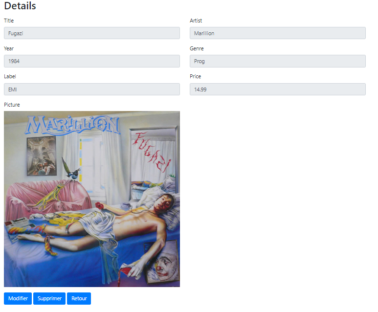

PHP -> PDO - CRUD : Atelier
Objectifs
Dans les ressources précédentes, vous avez appris à extraire des données provenant d'une base et les manipuler.
Vous avez donc maintenant tous les éléments nécessaire pour poursuivre votre projet en mettant en place une gestion CRUD pour les disques de Velvet Record.
A vous de jouer !
La liste
La première page discs.php, illustrée ci-dessous, doit afficher la liste des enregistrements se trouvant dans la table disc :

Un lien Détails permet d'afficher les informations d'un disque. Ce lien doit transmettre en paramètre l'identifiant (clé primaire) de l'enregistrement souhaité.
La page de liste doit proposer également un lien vers le formulaire d'ajout (en haut à droite sur notre image).
Le formulaire d'ajout

Il doit permettre de saisir toutes les informations présentes dans la table disc.
Vous devez donc créer le formulaire disc_new.php.
Attention : ce formulaire contient une liste déroulante pour sélectionner l'artiste du disque.
Construisez cette liste à partir d'une requête sur la table artist, dont les résultats alimenteront lesoptiondu champ...
Le formulaire doit poster les informations sur le script script_disc_ajout.php.
Ce script doit respecter les consignes suivantes :
- Récupération des informations transmises par le formulaire
- Enregistrement des données dans la base (à l'aide d'une requête
INSERT) - Prise en compte du fichier uploadé (l'image devra être récupérée et enregistrée sur votre serveur)
- Redirection vers la liste initiale si l'ajout a réussi
Pour rappel, une redirection s'effectue à l'aide de la commande suivante :
header("Location: mapage.php");
La page de détail
Nous l'appellerons disc_detail.php. Elle doit afficher les informations du disque :

L'ID du disque (disc_id) est transmise dans l'URL via la méthode GET
disc_form.php?disc_id=1Si les informations sont affichées dans des champs (cf. image ci-dessus), ces champs doivent être en lecture seule.
En outre, cette page possède :
- un lien vers le formulaire de modification (
disc_idest transmis dans l'URL) - un lien vers le formulaire de suppression (
disc_idest transmis dans l'URL) - un lien de retour vers la liste
Le formulaire de modification

Ce formulaire doit permettre de modifier un enregistrement de la table disc.
Vous devez donc créer le formulaire disc_form.php.
Le formulaire doit poster les informations sur le script script_disc_modif.php.
Ce script doit respecter les consignes suivantes :
- Pré-sélection de l'artiste du disque dans le menu déroulant du champ Artist
- Récupération des informations transmises par le formulaire
- Enregistrement des données dans la base (à l'aide d'une requête
UPDATE) - Prise en compte du fichier uploadé (pour simplifier : si un fichier a bien été transmis, effectuez une deuxième requête
updatepour modifier l'image dans la base) - Redirection vers la liste initiale si la mise à jour a réussi
Astuce : le
disc_idest transmis de la page disc_detail.php vers le formulaire disc_form.php par l'URL, puis vers le script script_disc_modif.php en champ caché...
Le formulaire de suppression
Un bouton, ajouté sur la page disc_detail.php, doit permettre de supprimer l'enregistrement de la table disc.
La demande de suppression doit être confirmée par l'utilisateur via une boîte de dialogue.
Astuce : vous pouvez par exemple utiliser la méthode
confirm()en JavaScript...
Un script script_disc_delete.php doit traiter cette suppression, et renvoyer sur la liste globale.
Sécuriser les requêtes SQL
N'oubliez pas de contrôler le contenu des champs envoyés par l'utilisateur !
Et si votre requête contient des paramètres, vous devez utiliser des requêtes préparées.
Travailler avec une bibliothèque de fonctions
Essayez de découper vos pages pour isoler :
- la partie connexion à la base de données
- la partie entête de votre page (header)
- la partie pied de page (footer)
Bonne chance !